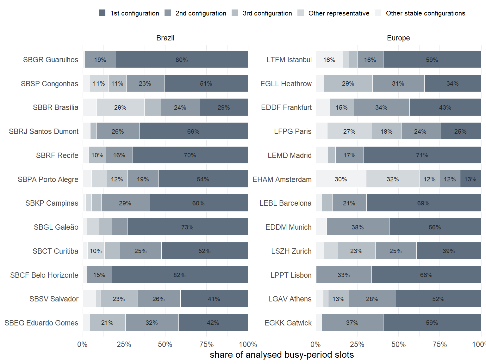
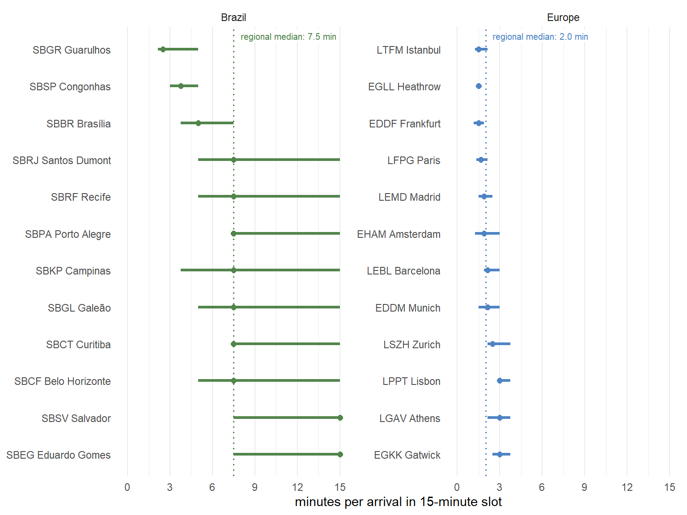
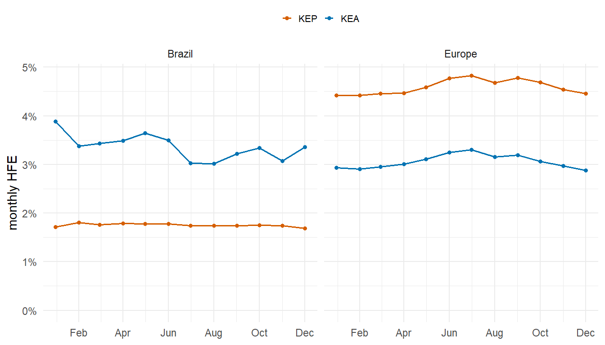
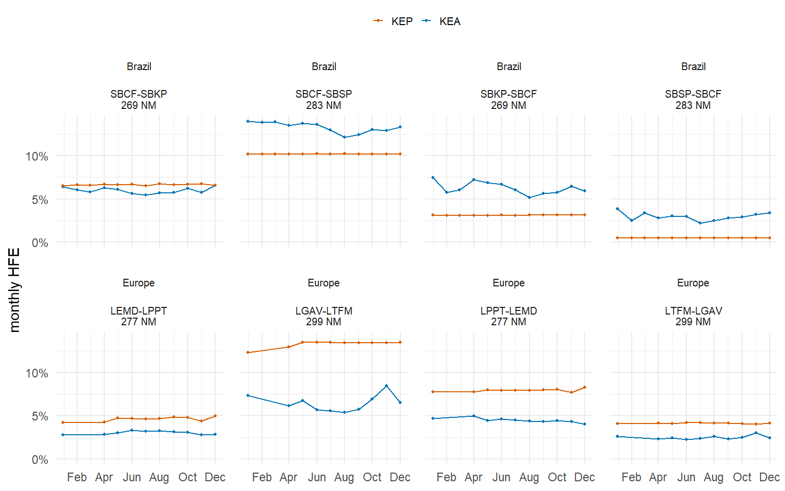
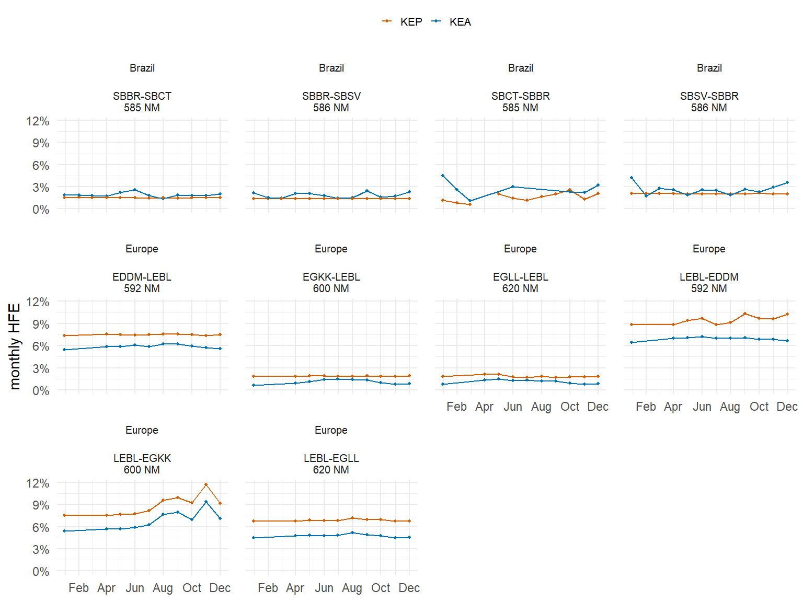
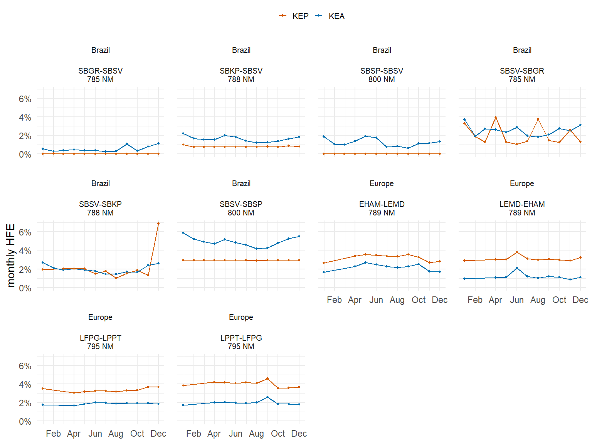
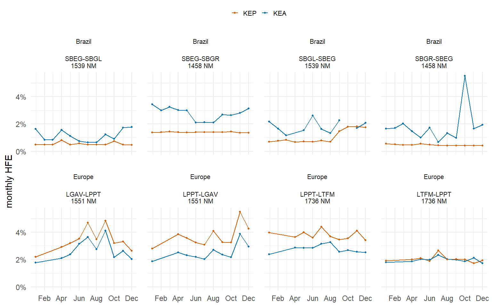

7 Topic Studies
For this report, the joint work between the performance groups at DECEA and EUROCONTROL involved the preparatory action for assessing operational sequencing concepts for runway system throughput during peak times and introducing an enroute performance measure, i.e., horizontal flight efficiency (HFE).
This chapter provides a first summary of the work to help refine the future work.
7.1 Runway Slot Pressure
This topic study uses 15-minute runway throughput to assess runway slot pressure during busy operations at the study airports. The analysis does not yet measure movement-by-movement inter-arrival time; instead, it uses slot-implied arrival spacing as a first proxy for how tightly arrival flows are packed under representative runway system configurations. This provides a basis for future inter-arrival studies and helps compare operational concepts observed in Brazil and Europe.
For each airport, the analysis identifies the 17 busiest local operating hours and retains stable runway system configurations observed across rolling one-hour windows. The stacked bars in Figure 7.1 show whether busy operations are concentrated in one dominant runway configuration or spread across several configurations.
Runway slot pressure is expressed as the slot-implied minutes per arrival, calculated as 15 minutes divided by the number of arrivals in a 15-minute slot. Lower values indicate more tightly packed arrival flows. Figure 7.2 ranks airports by the median value and shows the interquartile range observed during representative busy-period configurations.
Across the airports in both regions, Figure 7.2 shows a pattern of predominant runway system configurations. Multi-runway systems show a wider variability of combinations with certain configurations dominating the operational use. Predominant configurations reflect local conditions comprising - inter alia - traffic dependent approach/departure routings, including associated noise abatement procedures, sequencing techniques, and predominant wind conditions.

Figure 7.2 serves as a proxy for runway system configuration utilisation. Across the predominant configurations, we observe a distribution of runway system movements per 15-minute slot (arrivals and departures in mixed mode operations or single mode arrivals and departures). The higher demand pressure on European airports is characterised by a smaller distribution of the overall observed movements per 15-minute slot. As a proxy, the average across the 12 European airports is 2.0 min per movement or about 7.5 movements per quarter hour and runway. Airports in Brazil show a wider variability given the range of traffic demand. The slot pressure proxy across the airports ranges about 3 times higher in Brazil. The top airports in Brazil, i.e., Guarulhos/SBGR, Congonhas/SBSP, and Brasília/SBBR range within the order of magnitude of the European airports. This confirms observations made earlier in this report. Figure 7.2 also shows the growth potential of airports in Brazil with increasing traffic.
7.2 Horizontal Flight Efficiency
The horizontal flight efficiency (HFE) topic study compares the 2025 network-level results for Brazil and Europe and explores selected aerodrome pairs with broadly comparable great-circle distance. Brazil implemented the HFE algorithm for the first time for this report cycle; the results are therefore considered preliminary and are presented as a first validation-oriented comparison.
At network level, the HFE indicator shown here expresses horizontal flight inefficiency, calculated from the ratio of flown to achieved distance and aggregated on a monthly basis (c.f. Figure 7.3). On a network level there is a distinct difference between the horizontal flight inefficiency based on the planned and actual flown trajectories. On average, the HFE values for the actual flown trajectories range within the same order of magnitude, i.e., the 3-4% range. The Brazilian results show a higher level of variability across the year with a slight decreasing trend from January to December. Additional research will help to understand this behaviour better. There is a clear seasonal pattern on the European side coinciding with the peak tourism season during the summer. On the planning side, Brazil offers a lower level of inefficiency with the KEP ranging solidly below 2%. Europe shows a 2-2.5 times higher level of inefficiency with the classical seasonal pattern.
A key difference between both regions becomes visible from this high-level comparison: Operational realities appear to increase the level of enroute inefficiency within the Brazilian system with KEA > KEP. The European pattern shows the characteristics of a rigid planning system. The planning side is less efficient than the actual enabled flight path, KEP > KEA. In both regions the offset between the planned and actual trajectory efficiency accounts on average for 1.5-2%.

The selected aerodrome-pair comparisons focus on directional connections with broadly similar great-circle distance. For this report a set of distinct distances were selected to provide a deeper understanding of the observed differences on the network level and gain insight on how the overall network, airspace structure and associated procedural aspects affect the HFE measure.

Figure 7.4 shows HFE values for short-range aerodrome connections (just under 300NM). The results confirm the overall pattern observed on the network level. In general, the observed actual horizontal flight inefficiency (KEA) is higher than the planned KEP. A notable exception is the flight connection from Belo Horizonte/SBCF to Campinas/SBKP where there is only a marginal difference between KEP and KEA. On the European side, Figure 7.4 shows the classical KEP > KEA pattern. For the connection from Athens/LGAV to Istanbul/LTFM there is a higher offset between the KEP and KEA value suggesting that planning side constraints are regularly compensated for with the provided enroute services. In comparison with the other horizontal flight efficiency bands, there appears a higher level of inefficiency on shorter routes as departure and arrival procedures and shorter/no lower-upper airspace transition impact the route selection and air traffic services.

The first mid-distance band, Figure 7.5, shows a series of airports with a great circle distance of around 600NM. The data for Brazil suggests that this mid-level band sees a relatively close realisation of the flight paths as planned. The results for Europe vary depending on the chosen aerodrome pair and direction of flight. This suggests a higher impact of procedural aspects at this distance.

The second mid-distance band confirms the observations made for the shorter midband. On average, the observed horizontal inefficiencies are higher for this distance. This signals that the results also depend on the aerodrome pair chosen. Arrivals to Congonhas/SBSP show a higher level of difference between the planned and actual flown trajectory. The European results are fairly constant for this level band. This suggests that between the chosen aerodrome pairs, the seasonal effect is less visible and more of a systemic nature.

With Figure 7.7, this report studies the behaviour of the HFE indicator for aerodrome pairs with a great circle distance of around 1500NM or more. In both regions, the aforementioned pattern of behaviour between KEP and KEA is confirmed. This suggests that longer flights (3-4 hours) experience a similar level of inefficiency to the mid-distance flights. For the European airspace, the connection from Istanbul/LTFM to Lisbon/LPPT shows an interesting pattern, as KEP and KEA broadly coincide, while the other direction of flight shows the classical offset pattern.
7.3 Summary
This chapter highlighted two topics of interest for both parties. It offers a first glimpse into operational concepts, their implementation, and observed performance.
As was pointed out earlier in this report, the increasing demand pressure in both systems requires a high level of operational efficiency. One critical aspect in this is the utilisation of the runway system capacity. To study the implication of different sequencing concepts and techniques, this report investigated the principal sequencing behaviour during peak operating hours at the study airports. Runway slot pressure of the runway system configuration was introduced as a proxy for the inter-arrival sequencing, both in single runway and mixed mode operations. It measures the serviced demand pressure on the runway system during 15-minute slots. As a proxy, it gives already a good indication on the sequencing techniques/practices. For the studied airport operations, we observe an average of 2.0 min for Europe versus an average of 7.5 min per runway system movement.
The HFE results demonstrate an emerging capability on the Brazilian side. The data preparatory action now allows for the continual extraction and calculation of the horizontal flight efficiency measure across the network. In this report, the groups focussed on the overall observed network level performance and then studied a subset of aerodrome pair connections with similar great-circle distance.
Both groups are interested in advancing the state-of-the-art in assessing network- and center-level aspects. To move towards a more granular comparison, this report showcases the behaviour on a runway system configuration level and a network-wide measure in Brazil and Europe. This approach allowed for a high-level comparison on a set of harmonised indicators suitable to describe the scope of the service provision. This is useful to characterise the similarities and differences between both regions. Future work will revolve around the validation of the findings and its integration to the corpus of this report and the associated performance measures.